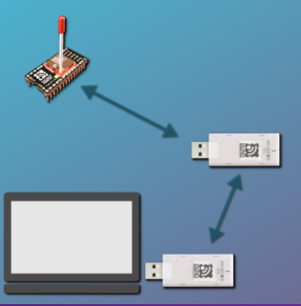
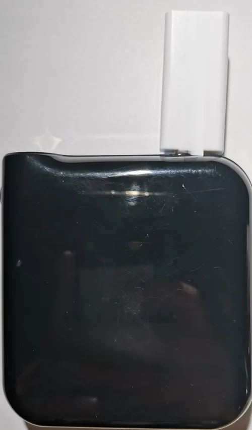
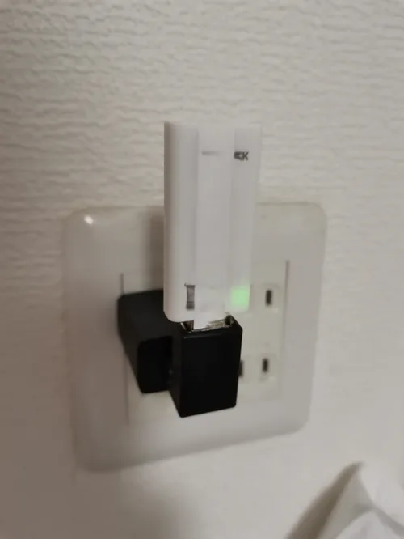
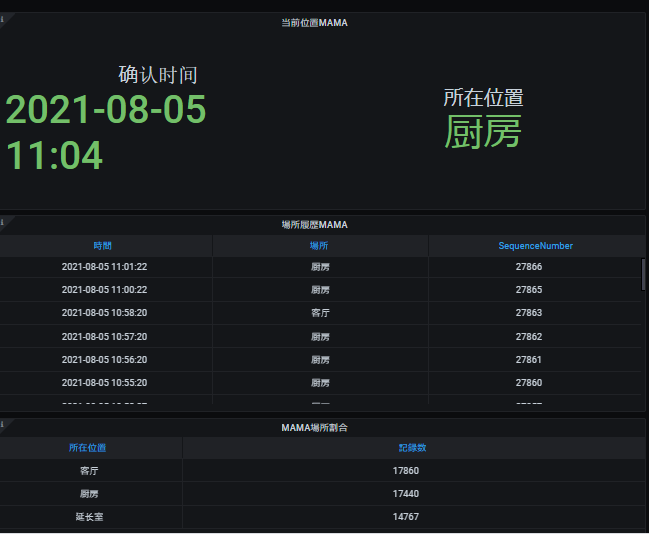

リアルタイムなエリア把握
現在どの部屋にいるかを即座に把握できることを確認しました。
複数の受信機（中継器）を屋内の各所に設置し、対象物や人が持つ発信機からの電波強度を比較することで、どの受信機に最も近いか＝「どのエリアにいるか」を推定する仕組みを検証しました。
GPSが届きにくい屋内でも、大まかな位置（部屋単位）を把握できる点が特徴です。

発信機と複数の受信機による位置推定の仕組み
用途に応じて2種類の中継器を検証しました。

モバイルバッテリー給電型：配線不要で設置場所を柔軟に変更できる

コンセント直結型：常設に適し、電池切れの心配がない
自宅内で実際に位置推定を検証した例です。対象者の現在位置（キッチン・リビングなど）を確認できるほか、時刻ごとの移動履歴、エリアごとの滞在記録数もあわせて確認できました。

自宅での位置推定検証画面（現在位置・移動履歴）
実際の検証の様子を動画でも紹介しています。
現在どの部屋にいるかを即座に把握できることを確認しました。
時系列で場所の変化を追跡・記録できる構成を検証しました。
エリアごとの滞在記録から、行動パターンを把握できることを確認しました。
見守りから工場・店舗まで、人やモノの居場所を知りたい場面への展開を想定しています。
どの部屋で過ごしているかを把握し、異常の早期発見につなげる活用を想定しています。
自宅内での居場所を確認できる用途を想定しています。
人やモノの所在エリアを把握する用途への応用を検討できます。
来店者の滞在エリア傾向を把握する用途への応用を検討できます。